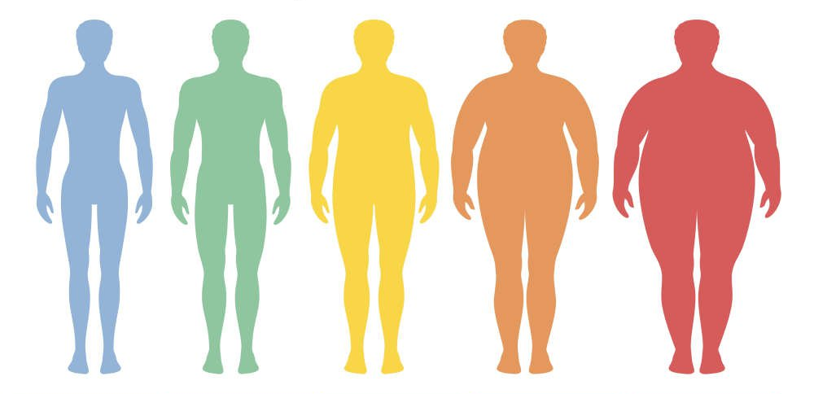

Chỉ số BMI của bạn ?
Chỉ số khối cơ thể hay còn gọi là BMI được dùng để xác định mức độ gầy hay béo của cơ thể thông
qua chiều cao và cân nặng.

Chỉ số BMI (chỉ số khối cơ thể) là điểm số tiêu chuẩn để xác định mức cân nặng của một
người dựa trên chiều cao, cân nặng của cơ thể. Với chỉ số BMI bạn có thể biết được cơ thể của mình thuộc
tình trạng: nhẹ cân, bình thường, thừa cân hay béo phì.
BMI là từ viết tắt tiếng Anh của: Body Mass Index
Chỉ số BMI có sự thay đổi giữa các quốc gia
Chỉ số BMI được tính bằng cân nặng của bạn (kg) chia cho bình phương chiều cao
(mét hoặc cm). Hãy kiểm tra chỉ số BMI của bạn bằng cách:
Nhập cân nặng (kg) và chiều cao (cm) của bạn vào bảng dưới đây.
Chọn vào “Kết quả” và kết quả chỉ số BMI của bạn sẽ được trả về.